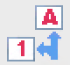
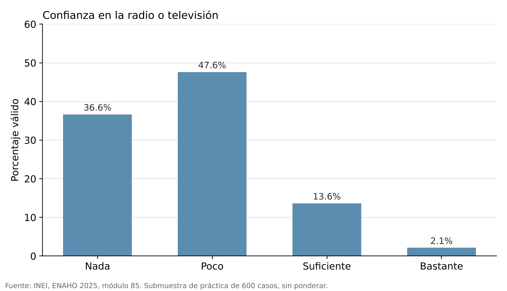
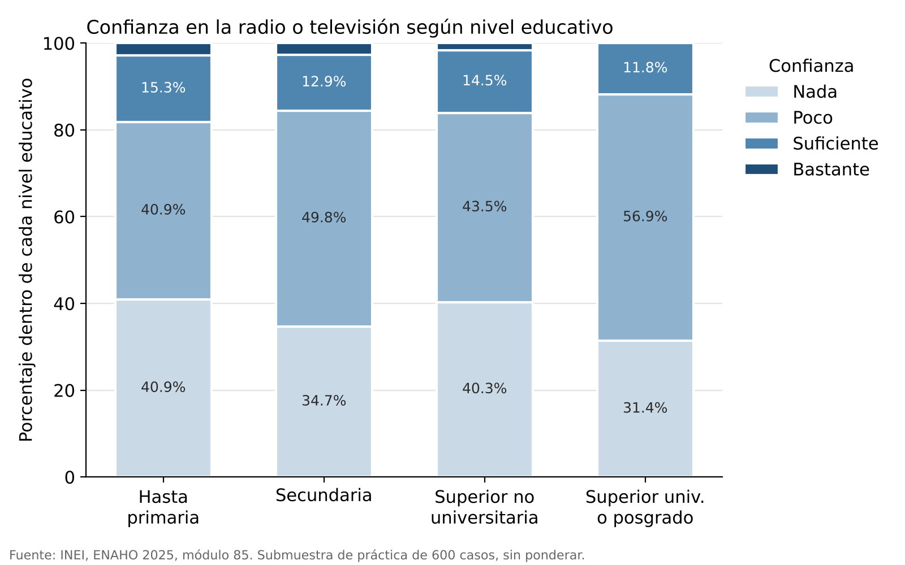
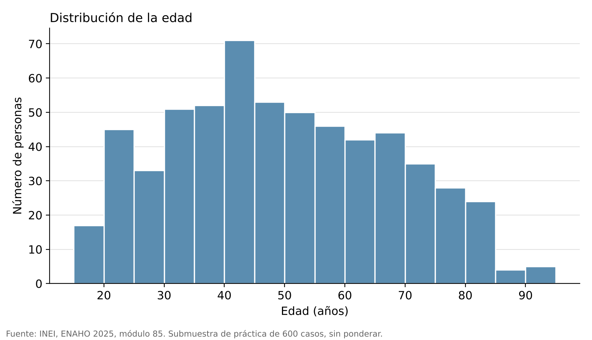
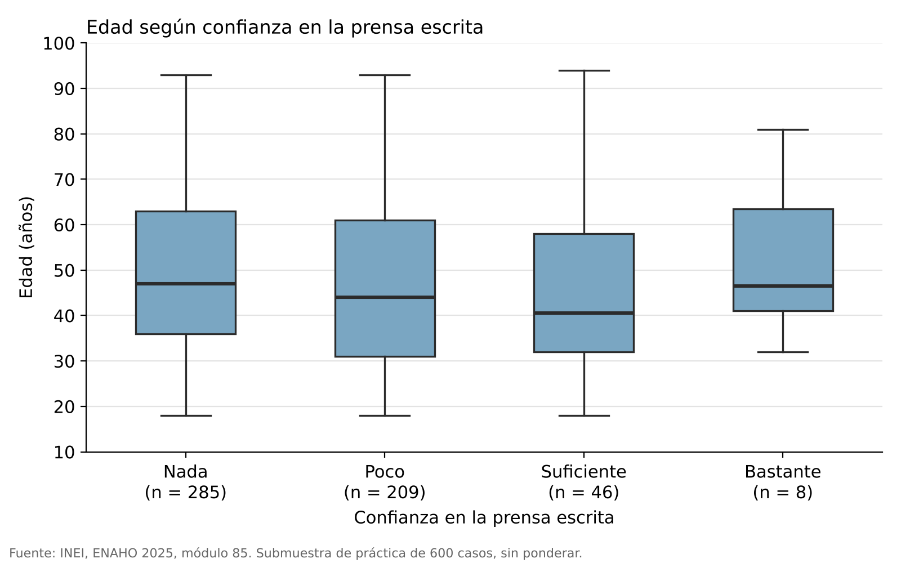
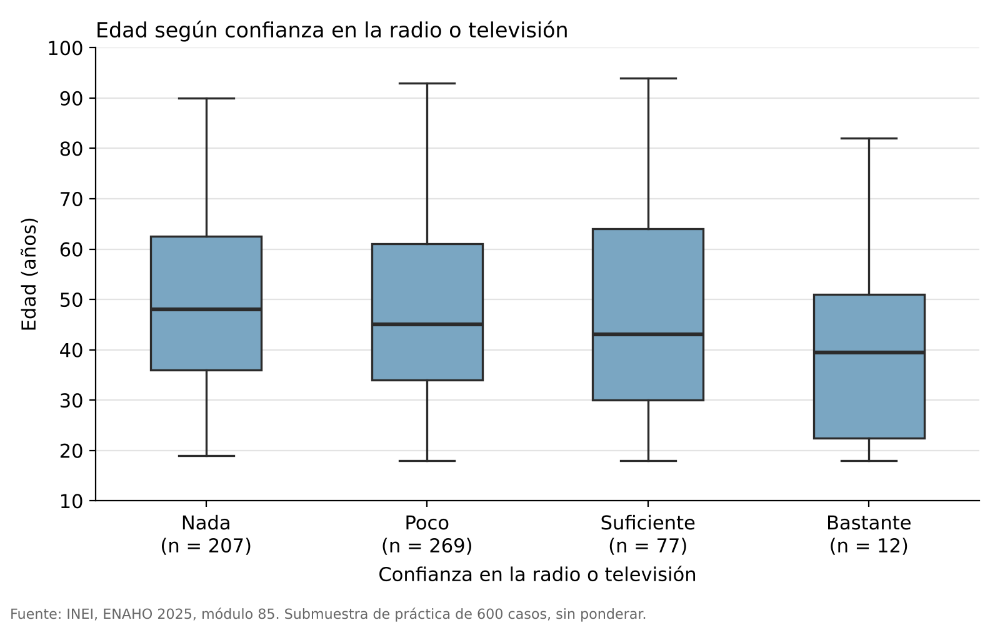

Lab 3: Ejercicios para el parcial
Esta página contiene ejercicios de análisis estadístico con SPSS usando datos reales del INEI.
Consigna
Son un equipo de comunicadores. La Asociación de Medios Regionales (organización ficticia) los contrata para preparar una campaña que recupere la confianza del público en la prensa, la radio y la televisión. Antes de diseñarla, necesita un diagnóstico: ¿cuánto confía la gente en los medios? ¿Más o menos que en otras instituciones? ¿Hay diferencias entre jóvenes y adultos mayores?
Trabajarán con datos de la Encuesta Nacional de Hogares (ENAHO) 2025, módulo 85: Gobernabilidad, democracia y transparencia, del INEI.
Bases
- confianza_peru.sav: para los ejercicios 2 y 3
La base es una submuestra de práctica de 600 personas de 18 años a más. Los resultados describen a las 600 personas de la base, no al Perú. Por eso, la interpretación debe decir “el 52% de las personas encuestadas…”, no “el 52% de los peruanos…”.
Ejercicio 1: Diseñar una base de datos
Además del diagnóstico con datos del INEI, la Asociación de Medios Regionales quiere aplicar su propia encuesta breve sobre cómo se informan las personas y cuánto confían en los medios. Diseña en SPSS la base de datos donde se registrarán las respuestas.
Explica cómo se estructura tu base: cuál es la unidad de análisis y qué variables recogerías, con su tipo, medida, etiquetas y valores perdidos.
Paso 1: Define la unidad de análisis y las variables
Antes de abrir SPSS, decide a quién representa cada fila (la unidad de análisis) y qué necesita saber la Asociación. Elige entre 8 y 10 variables. Incluye al menos:
- un identificador (
id); - dos variables de perfil (por ejemplo, sexo y edad);
- una variable nominal, una ordinal y una de escala;
- una pregunta con la opción “No sabe” o “Prefiero no responder”.
Paso 2: Crea las variables en la Vista de Variables
Abre SPSS (Archivo → Nuevo → Datos) y ve a la pestaña Vista de Variables. Cada fila es una variable. Completa estas columnas:
- Nombre: corto, sin espacios ni tildes (ej.
conf_prensa). - Tipo: Numérico. Las categorías se guardan como números con etiquetas, no como texto.
- Etiqueta: la pregunta o una descripción clara (ej. Confianza en la prensa escrita).
- Valores: el significado de cada código (ej. 1 = Nada, 2 = Poco…). Si tienes dudas, revisa cómo definir etiquetas de valores.
- Perdidos: declara el código de “No sabe” o “Prefiero no responder” en Valores perdidos discretos en la columna “Perdidos”.
- Medida: Nominal, Ordinal o Escala, según la variable.
Si el código de “No sabe” (por ejemplo, 5) no está declarado como perdido, SPSS lo trata como si fuera una opción más. Si estás trabajando con una variable de escala, SPSS interpretaría que es la categoría de mayor jerarquía.
Paso 3: Ingresa casos de prueba
Ve a la pestaña Vista de Datos e ingresa cinco casos ficticios: cada fila es una persona encuestada y cada columna, una variable. Activa Ver → Etiquetas de valor, o pulsa el botón

de la barra de herramientas, para comprobar que los códigos muestran su etiqueta.Paso 4: Explica la estructura de tu base
Escribe una explicación breve: cuál es la unidad de análisis, cuántas variables tiene tu base, y qué tipo y medida tiene cada una y por qué. Luego compárala con el ejemplo de Ver respuestas.
No hay una sola respuesta correcta. Cada uno puede elegir sus propias preguntas. Este es un ejemplo de una base simple que cumple con lo pedido. Puedes descargarla: ejemplo_base_medios.sav.
Unidad de análisis: la persona encuestada. Cada fila es una persona y cada columna, una variable.
| Nombre | Etiqueta | Valores | Perdidos | Medida |
|---|---|---|---|---|
id |
Identificador de la persona | 1, 2, 3… | — | Nominal |
sexo |
Sexo | 1 = Hombre, 2 = Mujer, 3 = Otro, 9 = Prefiero no responder | 9 | Nominal |
edad |
Edad en años cumplidos | número | — | Escala |
medio_principal |
Medio por el que más se informa | 1 = Televisión, 2 = Radio, 3 = Prensa escrita, 4 = Redes sociales, 5 = Portales de noticias web, 6 = Otro | — | Nominal |
horas_noticias |
Horas al día que dedica a informarse | número | — | Escala |
conf_prensa |
Confianza en la prensa escrita | 1 = Nada, 2 = Poco, 3 = Suficiente, 4 = Bastante, 5 = No sabe | 5 | Ordinal |
conf_radiotv |
Confianza en la radio o televisión | igual que arriba | 5 | Ordinal |
conf_redes |
Confianza en la información de redes sociales | igual que arriba | 5 | Ordinal |
verifica |
Frecuencia con que verifica una noticia antes de compartirla | 1 = Nunca, 2 = Pocas veces, 3 = Muchas veces, 4 = Siempre | — | Ordinal |
comparte |
Compartió alguna noticia en la última semana | 1 = Sí, 2 = No | — | Nominal |
Todas las variables son de tipo Numérico.
Ejemplo de explicación de la estructura
La base registra a cada persona encuestada en una fila (unidad de análisis: la persona) y tiene 10 variables. Las variables de categorías sin orden, como
sexo,medio_principalycomparte, son nominales. Las que tienen un orden, como las de confianza yverifica, son ordinales.edadyhoras_noticiasson de escala porque registran cantidades. Ensexoy en las preguntas de confianza, los códigos de “Prefiero no responder” (9) y “No sabe” (5) están declarados como perdidos para que no alteren los porcentajes válidos ni los promedios.
Ejercicio 2: Informe descriptivo
Con
confianza_peru.sav, redacta un informe descriptivo para la Asociación de Medios Regionales sobre la confianza en los medios. Usa tablas de frecuencias, tablas bivariadas y gráficos. Preguntas guía:
- Si presentaras los resultados a la Asociación, ¿qué aspectos destacarías como fortalezas y cuáles como alertas para los medios?
- ¿Qué recomendaciones incluirías al final del informe, basadas en las cifras?
Cada afirmación del informe debe llevar su número.
Paso 1: Tablas de frecuencias
Ve a Analizar → Estadísticos descriptivos → Frecuencias, pasa conf_prensa y conf_radiotv a la derecha y pulsa Aceptar.
Porcentaje usa como base a las 600 personas, incluidas las que respondieron “No sabe”. Porcentaje válido usa como base solo a quienes dieron una opinión. Para hablar de la confianza de quienes opinaron, usa el porcentaje válido. Revisa también cuántas personas respondieron “No sabe”, pues ese dato también es un hallazgo.
Paso 2: Compara los medios con otras instituciones
- Ve a Analizar → Estadísticos descriptivos → Descriptivos y pasa las ocho variables de confianza a la derecha.
- Pulsa Opciones. En Orden de visualización, marca Medias descendentes. Continuar y Aceptar.
- La tabla ordena las instituciones de mayor a menor confianza promedio. ¿En qué puesto quedan la radio o televisión y la prensa escrita?
Paso 3: Tablas bivariadas
Ve a Analizar → Tablas → Tablas personalizadas (ver Tablas personalizadas) y arma dos tablas:
conf_radiotven Filas ynivel_educen Columnas.conf_prensaen Filas yareaen Columnas.
En las dos, selecciona la variable de filas, pulsa Estadísticos de resumen y elige % de N columnas válidas. Luego, agrega el Total desde Categorías y totales. Así, cada grupo suma 100% (en sentido vertical) y puedes comparar entre grupos.
Paso 4: ¿Qué gráfico sirve para qué?
Elige el gráfico según cuántas variables quieres mostrar y de qué tipo son (ver Gráficos):
| Gráfico | Variables | Para qué sirve | Ejemplo con esta base |
|---|---|---|---|
| Barras simples | Una categórica (nominal u ordinal) | Mostrar cómo se reparten las respuestas entre categorías | Confianza en la radio o televisión |
| Barras apiladas | Dos categóricas | Comparar la composición de cada grupo: cada barra suma 100% | Confianza en la radio o televisión según nivel educativo |
| Histograma | Una numérica (escala) | Ver la forma de la distribución: dónde se concentran los casos y qué tan dispersos están | Edad |
| Boxplot | Una numérica (escala) según una categórica | Comparar la mediana, la dispersión y los valores atípicos entre grupos | Edad según confianza en la prensa escrita |
El histograma y el boxplot miden una variable numérica (de escala), como edad. Una pregunta tipo Likert, como conf_radiotv, nunca va como la variable que se mide: para describirla, usa barras. En el boxplot, una Likert sí puede ir en el eje X para formar los grupos, como en “edad según confianza en la prensa escrita”: ahí la variable que se mide sigue siendo edad.
Paso 5: Haz los gráficos
Todos se hacen en Gráficos → Generador de gráficos, pestaña Galería.
Barras simples
- Elige Barras y arrastra Barras simples al lienzo.
- Arrastra
conf_radiotval eje X. - En Propiedades del elemento, cambia en Estadísticos a Porcentaje y pulsa Aceptar.
Barras apiladas
- Elige Barras y arrastra Barras apiladas al lienzo.
- Arrastra
nivel_educal eje X yconf_radiotval cuadro Pila: establecer color. - En Propiedades del elemento, cambia en Estadísticos de Recuento a Porcentaje. Pulsa Establecer parámetros y elige Total para cada categoría del eje X, para que cada barra sume 100%. Continuar y Aplicar.
- Si los colores quedan en orden invertido (Nada arriba y Bastante abajo): en Propiedades del elemento, en Editar propiedades de, selecciona GrupoColor (Barras1). En Categorías, cambia la Dirección del orden a Descendente.
- Pulsa Aceptar.
Histograma
- Elige Histograma y arrastra Histograma simple al lienzo.
- Arrastra
edadal eje X. Aceptar.
Boxplot
- Elige Diagrama de caja y arrastra Diagrama de caja simple al lienzo.
- Arrastra
conf_prensaal eje X yedadal eje Y. Aceptar.
Paso 6: Redacta el informe
Organízalo en tres partes:
- Hallazgos principales (tres o cuatro, cada uno con su cifra)
- Fortalezas y alertas para los medios
- Recomendaciones para la campaña
- Emplea lenguaje asociativo. Por ejemplo, “quienes tienen educación superior universitaria confían menos”, en lugar de “la educación determina la confianza”.
- Diferencia el objetivo de la campaña (qué cambio busca) del producto (la pieza o el medio que usarás).
- Antes de afirmar algo, revisa cuántos casos hay detrás. Un porcentaje de un grupo con muy pocos casos no sostiene una conclusión.
El informe es de redacción libre, pero tus cifras deben coincidir con estas.
Paso 1. Frecuencias (porcentaje válido)
| Nada | Poco | Suficiente | Bastante | No sabe (de 600) | |
|---|---|---|---|---|---|
| Prensa escrita | 52.0% | 38.1% | 8.4% | 1.5% | 52 (8.7%) |
| Radio o televisión | 36.6% | 47.6% | 13.6% | 2.1% | 35 (5.8%) |
Confían “suficiente” o “bastante”: 9.9% en la prensa escrita y 15.8% en la radio o televisión.
Paso 2. Ranking por media
| Puesto | Institución | Media |
|---|---|---|
| 1 | RENIEC | 2.32 |
| 2 | Radio o televisión | 1.81 |
| 3 | Policía Nacional | 1.69 |
| 4 | JNE | 1.67 |
| 5 | Municipalidad distrital | 1.67 |
| 6 | Prensa escrita | 1.59 |
| 7 | Partidos políticos | 1.27 |
| 8 | Congreso | 1.26 |
Paso 3. Tablas bivariadas (% de columna)
Confianza en la radio o televisión según nivel educativo:
| Hasta primaria (n=176) | Secundaria (n=225) | Sup. no universitaria (n=62) | Sup. universitaria (n=102) | |
|---|---|---|---|---|
| Nada | 40.9% | 34.7% | 40.3% | 31.4% |
| Poco | 40.9% | 49.8% | 43.5% | 56.9% |
| Suficiente | 15.3% | 12.9% | 14.5% | 11.8% |
| Bastante | 2.8% | 2.7% | 1.6% | 0.0% |
Confianza en la prensa escrita según área:
| Urbano (n=391) | Rural (n=157) | |
|---|---|---|
| Nada | 51.2% | 54.1% |
| Poco | 38.6% | 36.9% |
| Suficiente | 9.5% | 5.7% |
| Bastante | 0.8% | 3.2% |
Paso 5. Gráficos
Tus gráficos de SPSS deben mostrar lo mismo que estos, aunque se vean distintos.




Algunos hallazgos que se pueden señalar…
- Barras: “Poco” es la respuesta más frecuente (47.6%) mientras que un pequeño porcentaje confía “bastante” (2.1%).
- Barras apiladas: quienes tienen educación superior universitaria responden más “poco” (56.9%) y menos “nada” (31.4%), pero también menos “suficiente” o “bastante” (11.8%, frente a 18.1% de quienes tienen hasta primaria).
- Histograma: las edades van de 18 a 94 años. La mitad central está entre los 35 y 63 años, y el tramo con más personas es el de 40 a 44. La media es 49 y la mediana, 47. Hay pocos casos de más de 85 años.
- Boxplot: la mediana de edad es parecida en todos los grupos (entre 40 y 47 años). El grupo “Bastante” tiene solo 8 personas, muy pocas para sacar conclusiones.
Ejemplo de hallazgo bien redactado
La radio o televisión es la segunda institución con mayor confianza promedio (1.81 en una escala de 1 a 4), después del RENIEC. Aun así, solo el 15.8% de las personas que opinaron confía “suficiente” o “bastante” en ella.
Ejercicio 3: Lectura de un boxplot
El siguiente boxplot muestra la edad de las personas encuestadas según su nivel de confianza en la radio o televisión. A partir del gráfico, responde de manera detallada.

Paso 1: Lee el gráfico
- ¿Qué grupo tiene la mediana de edad más alta? ¿Cuál tiene la más baja? Indica los valores aproximados.
- Compara la altura de las cajas. ¿Qué grupo presenta mayor variabilidad en la edad? ¿Cuál es el más homogéneo?
- ¿Se observan valores atípicos en algún grupo?
- ¿Qué grupo tiene menos casos? ¿Por qué importa al leer su caja?
- Mediana más alta la tiene el grupo que confía Nada (≈48 años). La más baja, el grupo que confía. Bastante (≈40 años). La mediana de edad baja a medida que sube la confianza.
- Mayor variabilidad se observa en quienes confían Suficiente, con la caja más alta (de 30 a 64 años). Las más homogéneas son Nada (de 36 a 62 años) y Poco (de 34 a 61 años), casi iguales.
- No. Ningún grupo tiene puntos fuera de los bigotes.
- Bastante, con solo 12 personas. Con tan pocos casos, la caja puede cambiar mucho con una o dos personas más, así que resulta importante leerla con cautela.
Paso 2: Interpreta
- ¿Qué relación se observa entre la edad y la confianza en la radio o televisión?
- Si fueras la Asociación de Medios Regionales, ¿a qué público dirigirías la campaña? Justifica con lo que muestra el gráfico.
- Quienes confían más en la radio o televisión tienden a ser algo más jóvenes. La mediana de edad baja de 48 años (Nada) a 40 años (Bastante). Pero las cajas se superponen mucho y el grupo “Bastante” tiene pocos casos, así que la diferencia es moderada. Se trata de una asociación y no una causa, pues el gráfico no dice que la edad produzca la confianza.
- Hay más de una respuesta válida si se justifica con el gráfico. Por ejemplo, las personas mayores, porque se concentran entre quienes no confían “nada”; o las jóvenes, porque muestran algo más de confianza y conviene fortalecerla.
Paso 3: Reproduce el gráfico en SPSS
- Ve a Gráficos → Generador de gráficos. En Galería, elige Diagrama de caja y arrastra el Diagrama de caja simple al lienzo.
- Arrastra
conf_radiotval eje X yedadal eje Y. - Pulsa Aceptar.